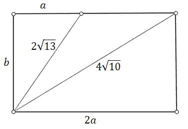

Układy równań w zadaniach z treścią
Trudniejsze zadania tekstowe na ułożenie układu dwóch
równań z dwiema niewiadomymi znajdziesz na
tej stronie.
Jeśli od cyfry dziesiątek liczby trzycyfrowej odejmiemy cyfrę jedności, to
otrzymamy \(6\). Suma cyfry dziesiątek i cyfry jedności tej liczby wynosi \(10\). Znajdź wszystkie
liczby trzycyfrowe podzielne przez \(3\) spełniające ten warunek.
\(282, 582, 882\)
W pewnej szkole pracuje \(20\) nauczycieli. Stosunek liczby mężczyzn do liczby
kobiet jest równy \(1 : 9\). Ile kobiet i ilu mężczyzn pracuje w tej szkole?
\(2\) mężczyzn i \(18\) kobiet
W dwóch naczyniach jest pewna ilość wody. Gdyby z pierwszego naczynia wylano do
zlewu \(5\) cm3, to woda zawarta w tym naczyniu stanowiłaby połowę ilości wody
znajdującej się w drugim naczyniu. Gdyby z drugiego naczynia przelano \(10\) cm3 wody do
pierwszego naczynia, to ilości wody w obu naczyniach byłyby równe. Ile cm3 wody znajduje
się w tych naczyniach?
\(30\) i \(50\)
Suma trzech liczb naturalnych jest równa \(42\). Druga liczba stanowi \(75\%\)
pierwszej liczby. Trzecia liczba jest piątą częścią sumy pozostałych liczb. Znajdź te liczby.
\(20,15,7\)
Oblicz wymiary narysowanego poniżej prostokąta. 
\(4\times 12\)